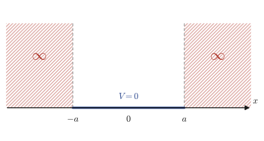
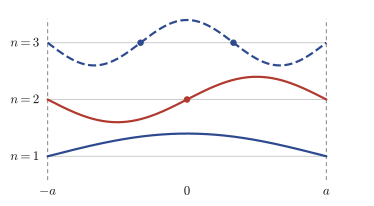
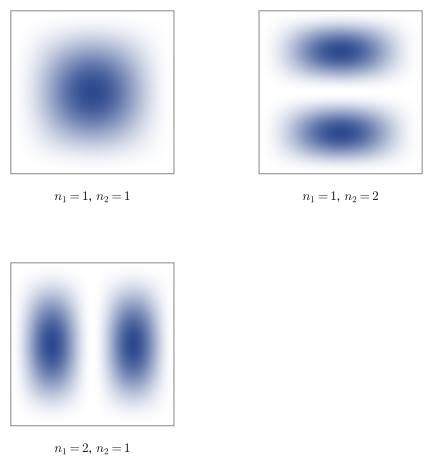

Chapter 45The Schrödinger Equation (Cartesian Coordinates) and the Infinite Square Well Potential
In the preceding chapters we have mastered the technique of solving, by the method of separation of variables, partial differential equations that describe concrete physical phenomena, such as the wave equation and the heat equation. We have also examined what form the differential operator called the “Laplacian” takes in polar, cylindrical, and spherical coordinates. From this chapter on, we finally use those tools to solve the central equation of an entirely new physics born in the twentieth century—quantum mechanics—the “Schrödinger equation.”
The Schrödinger equation is a partial differential equation that describes the behavior of extremely small particles such as electrons and atomic nuclei. Whereas Newton's equation of motion $F=ma$, which you learned in high school physics, is an equation for “finding the position $x(t)$ of a particle,” the Schrödinger equation is an equation for “finding a complex-valued function called the wave function $\psi$.” Why a function, and why complex numbers?—this chapter cannot fully answer these questions (that is left to a course on quantum mechanics itself). Nevertheless, by the time you finish this chapter, you should at least know concretely “what to do when you are faced with the Schrödinger equation.”
The first concrete example treated in this chapter is the infinite square well potential (“particle in a box”), the simplest problem in quantum mechanics imaginable. Confine an electron in a box of width $2a$ so that it can never get outside the box—from this simple setup alone, the single most important feature of quantum mechanics, namely that “energy cannot take continuous values but only discrete ones” (quantization), is derived exactly, with no approximation whatsoever. Let us derive this surprising conclusion ourselves, using only the method of separation of variables acquired in the preceding chapters and our knowledge of second-order linear homogeneous differential equations from Chapter 35.
- What an operator is, and what the eigenvalue equation “(operator) × (eigenfunction) = (eigenvalue) × (eigenfunction)” means
- The definitions of the momentum operator $\hat p=\dfrac{\hbar}{i}\pdiff{}{x}$ and the energy operator $\hat E=-\dfrac{\hbar}{i}\pdiff{}{t}$, and the fact that they commute
- The introduction of the Hamiltonian operator $\hat H=\hat p^2/2m+V$, and the derivation of the Schrödinger equation $\hat H\psi=E\psi$ (for a stationary state) and $\hat H\psi=\hat E\psi$ (for the time-dependent case)
- Solving for the stationary states of the one-dimensional infinite square well potential and deriving the quantization of the energy eigenvalues $E_n=\dfrac{\hbar^2\pi^2}{8ma^2}n^2$
- The idea of the “nontrivial-solution condition (determinant = 0)” for satisfying the boundary conditions—its correspondence with the eigenvalue problem of linear algebra
- The time-dependent solutions of the one-dimensional infinite square well potential, and the normalization of the wave function $\int\abs{\psi}^2\dd x=1$
- The extension to the two-dimensional infinite square well potential, and the phenomenon of “degeneracy,” in which different sets of quantum numbers give the same energy
- Mastering the standard sequence of steps, or “template,” for solving problems in quantum mechanics: “separation of variables → ordinary differential equation in each direction → quantization by the boundary conditions → normalization” (this template is used repeatedly in the following chapters, for the harmonic oscillator and the hydrogen atom)
Source notes: Yasuhide Mochizuki, Mathematics Notes: Partial Differential Equations, pp. 29–37.
45.1 Operators and the Hamiltonian in Quantum Mechanics
In this chapter we deal with a completely new kind of mathematical object, the operator. In a word, an operator is “a mechanism that takes a function and returns another function.” This is a concept one level higher in abstraction than the “functions that take a number and return a number” that you have become familiar with through high school mathematics. For example, differentiation $\dfrac{d}{dx}$ is also a kind of operator: it takes a function $f(x)$ and returns another function, the derivative $f'(x)$. All the operators that appear in this chapter are built solely by combining differentiation (or the operation of multiplying by something), so there is nothing difficult about their content.
Intuition: An operator is a “machine that takes a function and returns a function”
As in Figure 45.1, think of an operator $\hat A$ as “a machine that performs some operation (differentiate, multiply by $x$, and so on) on an input function $\psi(x)$ and outputs another function $\hat A\psi(x)$.” Structurally, this is exactly the same idea as the one you learned in linear algebra (Chapter 12), that “a matrix $A$ is a mechanism that takes a vector $\bm v$ and returns another vector $A\bm v$.” Recall the eigenvalue equation of a matrix, $A\bm v=\lambda\bm v$ (Section 12.1)—we called a special vector $\bm v$ for which “multiplying by the matrix does not change the direction and only multiplies the length by $\lambda$” an eigenvector, and the factor $\lambda$ its eigenvalue. We use the same words for operators. You can think of the “collection of all functions” as an infinite-dimensional version of a collection of vectors (a vector space)—what corresponds to the “direction” of a vector is the “shape (waveform)” of a function.
Definition 45.1: Eigenvalue equation of an operator
Suppose an operator $\hat A$ and a function $\psi$ (which is not identically $0$) satisfy
\begin{equation} \hat A\psi=\lambda\psi\qquad(\lambda\ \text{is a constant independent of}\ \psi) \label{eq:45-eigen-def} \end{equation}Then $\psi$ is called an eigenfunction of $\hat A$, and $\lambda$ the corresponding eigenvalue. In other words, this is an equality of the form “(operator) × (eigenfunction) = (eigenvalue) × (eigenfunction).”
Definition 45.2: Momentum operator and energy operator
In quantum mechanics, the following operators are assigned to the physical quantities momentum $p$ and energy $E$, respectively. Here $\hbar=h/2\pi$ is the reduced Planck constant ($h$ is the Planck constant, and the quantity obtained by dividing it by $2\pi$ is given its own symbol $\hbar$ (h-bar)), and $i$ is the imaginary unit ($i^2=-1$, Chapter 21).
\begin{equation} \hat p=\frac{\hbar}{i}\pdiff{}{x},\qquad \hat E=-\frac{\hbar}{i}\pdiff{}{t} \label{eq:45-p-E-def} \end{equation}Physical meaning: Commuting operators and simultaneous measurement
Quantum mechanics has the following principle—when two operators $\hat A,\hat B$ commute ($\hat A\hat B=\hat B\hat A$, that is, the commutator $[\hat A,\hat B]:=\hat A\hat B-\hat B\hat A$ is identically $0$), the two corresponding physical quantities can, in principle, be measured simultaneously with arbitrarily high precision. Conversely, physical quantities corresponding to operators that do not commute (for example, the position operator $\hat x$ and the momentum operator $\hat p$) cannot be measured precisely at the same time (this is the operator form of Heisenberg's uncertainty principle). The momentum operator $\hat p$ and the energy operator $\hat E$ are operators with respect to different variables—differentiation in $x$ and differentiation in $t$, respectively—so they commute (this simply means that the result is the same even if we interchange the order of partial differentiation in $x$ and partial differentiation in $t$). We will actually verify this in Exercise 45.3.
As a trial, let us apply these two operators to the plane wave with wavenumber $k$ ($k=2\pi/\lambda_{\text{wave}}$ if the wavelength is $\lambda_{\text{wave}}$) and angular frequency $\omega$ ($\omega=2\pi\nu$ if the frequency is $\nu$):
$$ \varphi(x,t)=Ae^{i(kx-\omega t)} $$Here $A$ is a complex constant (independent of $x,t$). Recall that $e^{i\theta}=\cos\theta+i\sin\theta$ (Euler's formula, Section 21.4); then $\varphi$ is a wave whose real and imaginary parts are $\cos(kx-\omega t)$ and $\sin(kx-\omega t)$, respectively. To differentiate $\varphi$ once with respect to $x$, we regard $t$ as a constant and simply use the differentiation formula for the exponential function, $\dfrac{d}{dx}e^{cx}=ce^{cx}$ ($c$ is a constant independent of $x$) (here, looking at the exponent in terms of $x$, we have $c=ik$).
Example 45.1: Applying the operators to a plane wave (computation from the original notes)
Apply the momentum operator $\hat p$ and the energy operator $\hat E$ to the plane wave $\varphi(x,t)=Ae^{i(kx-\omega t)}$, and verify that $\varphi$ is an eigenfunction of both.
Solution. First we apply the momentum operator. When we differentiate partially with respect to $x$, everything other than the $x$ in the exponent is treated as a constant, so $\pdiff{\varphi}{x}=ik\cdot\varphi$. Therefore
$$ \hat p\varphi=\frac{\hbar}{i}\pdiff{\varphi}{x}=\frac{\hbar}{i}\cdot ik\cdot\varphi=\hbar k\cdot\varphi $$($\dfrac{\hbar}{i}\cdot ik=\hbar k\cdot\dfrac{i}{i}=\hbar k$. Note that $\dfrac{i}{i}=1$.) Next we apply the energy operator. This time we differentiate partially once with respect to $t$, so $\pdiff{\varphi}{t}=-i\omega\cdot\varphi$.
$$ \hat E\varphi=-\frac{\hbar}{i}\pdiff{\varphi}{t}=-\frac{\hbar}{i}\cdot(-i\omega)\cdot\varphi=\hbar\omega\cdot\varphi $$Therefore $\varphi$ is an eigenfunction of both $\hat p$ and $\hat E$, with eigenvalues $\hbar k$ for momentum and $\hbar\omega$ for energy, respectively. This agrees with the de Broglie relation $p=\hbar k=h/\lambda_{\text{wave}}$, which triggered the birth of quantum mechanics, and with the Planck–Einstein relation $E=\hbar\omega=h\nu$.
Next, let us confirm by dimensional analysis that $\hbar k$ and $\hbar\omega$ indeed have the dimensions of momentum and energy. The dimension of the Planck constant $h$ is $[\text N\cdot\text m\cdot\text s]$ (force × distance × time, that is, the dimension of energy × time). Since the wavenumber is $k=2\pi/\lambda_{\text{wave}}$ (the dimension of $\lambda_{\text{wave}}$ is $[\text m]$), we have $\hbar k=\dfrac{h}{2\pi}\cdot\dfrac{2\pi}{\lambda_{\text{wave}}}=\dfrac{h}{\lambda_{\text{wave}}}$, and its dimension is
$$ [\hbar k]=\frac{\text N\cdot\text m\cdot\text s}{\text m}=\text N\cdot\text s $$which coincides with the dimension of momentum ($p=mv$, mass × velocity = $\text{kg}\cdot\text m/\text s$, converted to the unit of impulse, $\text N\cdot\text s$). Similarly, using the frequency $\nu$ (dimension $[\text s^{-1}]$, $\omega=2\pi\nu$), we have $\hbar\omega=\dfrac{h}{2\pi}\cdot2\pi\nu=h\nu$, and
$$ [\hbar\omega]=\text N\cdot\text m=\text J $$which coincides with the dimension of energy. This confirms that the definitions of the momentum operator and the energy operator (Definition 45.2) return physically correct quantities.
Definition 45.3: Hamiltonian operator
The Hamiltonian $H$ in classical mechanics is defined, using the generalized momenta $p_i$, the generalized velocities $\dot x_i$, and the Lagrangian $L$, as $H=\sum_i p_i\dot x_i-L$ (analytical mechanics). For a single particle of mass $m$ moving in one dimension under a potential $V(x)$, it is known to be equal to the sum of the kinetic energy and the potential energy.
\begin{equation} H=\frac12m\dot x^2+V=\frac{p^2}{2m}+V \label{eq:45-hamiltonian-classical} \end{equation}(Since the definition of momentum, $p=m\dot x$, gives $\dot x=p/m$, we can rewrite $\frac12m\dot x^2=\frac12m\left(\dfrac pm\right)^{\!2}=\dfrac{p^2}{2m}$.) From this, by replacing the momentum $p$ with the operator $\hat p$, we define the Hamiltonian operator $\hat H$.
\begin{equation} \hat H=\frac{\hat p^2}{2m}+V=\frac{1}{2m}\left(\frac{\hbar}{i}\pdiff{}{x}\right)^{\!2}+V =-\frac{\hbar^2}{2m}\pdiff{^2}{x^2}+V \label{eq:45-hamiltonian-op} \end{equation}(When we compute $\hat p^2$, note that $\left(\dfrac1i\right)^{\!2}=\dfrac1{i^2}=\dfrac1{-1}=-1$; this explains why the sign of the coefficient changes to minus.)
Let us apply this $\hat H$ to the same plane wave as before, $\psi(x,t)=Ae^{i(kx-\omega t)}$ (from here on, we switch the symbol for the wave function from $\varphi$ to $\psi$; the letters themselves carry no difference in meaning, and we are simply standardizing on the symbol $\psi$, which is used in the latter half of the original notes, for the “wave function,” the protagonist of this chapter). Differentiating partially twice with respect to $x$ gives $\pdiff{^2\psi}{x^2}=(ik)^2\psi=-k^2\psi$, so
$$ \hat H\psi=\left\{-\frac{\hbar^2}{2m}(ik)^2+V\right\}\psi=\left(\frac{\hbar^2k^2}{2m}+V\right)\psi =\left(\frac{p^2}{2m}+V\right)\psi $$(In the last equality, we used the result $p=\hbar k$ of Example 45.1 to rewrite $\hbar^2k^2=(\hbar k)^2=p^2$.) Now, following Eq. \eqref{eq:45-hamiltonian-classical} of classical mechanics, if we set $\dfrac{p^2}{2m}+V=E$ (a constant energy), we obtain
\begin{equation} \hat H\psi(x,t)=E\psi(x,t) \label{eq:45-tise-eigen} \end{equation}an equality of exactly the same form as the eigenvalue equation of an operator in Definition 45.1. This is precisely the skeleton of the Schrödinger equation, which we will derive in detail in the next section—solving “the eigenvalue equation of the Hamiltonian operator, with the energy $E$ as the eigenvalue and the wave function $\psi$ as the eigenfunction” becomes the fundamental problem of quantum mechanics.
45.2 Derivation of the Schrödinger Equation
Simply substituting the definition of the Hamiltonian operator, Eq. \eqref{eq:45-hamiltonian-op}, $\hat H=-\dfrac{\hbar^2}{2m}\pdiff{^2}{x^2}+V$, into Eq. \eqref{eq:45-tise-eigen}, $\hat H\psi=E\psi$ (from the end of the previous section), lets us write the equation out in concrete form.
Derivation: The time-independent (stationary-state) Schrödinger equation
Substituting $\hat H=-\dfrac{\hbar^2}{2m}\pdiff{^2}{x^2}+V$ into $\hat H\psi=E\psi$, we obtain
\begin{equation} -\frac{\hbar^2}{2m}\pdiff{^2\psi}{x^2}+V\psi=E\psi \label{eq:45-tise-stationary} \end{equation}This is called the time-independent Schrödinger equation. “Time-independent” means that the energy $E$ is a constant value that does not depend on the time $t$; that is, the system is in a stationary state. In this case the wave function $\psi=\psi(x)$ is also found as a function of $x$ alone.
Now, what should we do in the general case where the energy varies in time (that is, the system is not in a stationary state)? Here the original notes make a clever shift in viewpoint—the number “energy $E$” is replaced by the operator “energy operator $\hat E$,” and the equation is rewritten as it stands in the language of operators. By Definition 45.2, $\hat E=-\dfrac{\hbar}{i}\pdiff{}{t}$. (Why such a replacement is allowed may seem abrupt. The clue lies in Example 45.1—for a plane wave $\varphi=Ae^{i(kx-\omega t)}$ with definite energy, we had $\hat E\varphi=\hbar\omega\cdot\varphi=E\varphi$. That is, in the special case we have treated so far (a stationary state, in which the energy $E$ is fixed at a constant value), applying the operator $\hat E$ and multiplying by the number $E$ give exactly the same result. Therefore, in the general case (where the energy may vary in time), using the operator $\hat E$ in place of the number $E$ does not destroy consistency with the special case of stationary states, at least. This is the reason why we may “promote” the number $E$ to the operator $\hat E$.)
Derivation: The time-dependent (general) Schrödinger equation
Since $E\psi=\hat E\psi$ (meaning that the two are equal when $E$ is a constant), replacing $E\psi$ in $\hat H\psi=E\psi$ with $\hat E\psi$ gives
$$ \hat H\psi=\hat E\psi $$This is an equality written entirely in terms of two operators. Substituting the definitions of the operators ($\hat H=-\dfrac{\hbar^2}{2m}\pdiff{^2}{x^2}+V$, $\hat E=-\dfrac{\hbar}{i}\pdiff{}{t}$) into the left-hand and right-hand sides, respectively, we obtain
\begin{equation} -\frac{\hbar^2}{2m}\pdiff{^2\psi}{x^2}+V\psi=-\frac{\hbar}{i}\pdiff{\psi}{t} \label{eq:45-tise-time} \end{equation}This is the time-dependent Schrödinger equation. The coefficient on the right-hand side can be rewritten, using $\dfrac1i=\dfrac{1}{i}\cdot\dfrac{-i}{-i}=\dfrac{-i}{-i^2}=\dfrac{-i}{1}=-i$, as $-\dfrac{\hbar}{i}=-\hbar\cdot(-i)=i\hbar$, so Eq. \eqref{eq:45-tise-time} can also be written as $i\hbar\pdiff{\psi}{t}=-\dfrac{\hbar^2}{2m}\pdiff{^2\psi}{x^2}+V\psi=\hat H\psi$. This form (the Hamiltonian operator on the right-hand side and $i\hbar\,\partial/\partial t$ on the left-hand side) is the notation adopted as the standard form in many textbooks, so it is worth remembering.
Caution: The relation between “time-independent” and “time-dependent”
Eq. \eqref{eq:45-tise-time} “contains” Eq. \eqref{eq:45-tise-stationary}—that is, in a stationary state where the energy is fixed at a constant value $E$, the wave function can be written in the form $\psi(x,t)=\psi(x)e^{-iEt/\hbar}$ (the product of a function $\psi(x)$ of space alone and a phase factor $e^{-iEt/\hbar}$ of time alone), and substituting this into Eq. \eqref{eq:45-tise-time} recovers Eq. \eqref{eq:45-tise-stationary} (as we actually do in Section 45.4). Therefore, in the sections that follow in this chapter as well, we proceed in this order: first solve the “stationary-state” (time-independent) equation to find the spatial part $\psi(x)$, and then move on to the case where the state varies in time.
Example 45.2: Checking that a free-particle plane wave satisfies the time-dependent Schrödinger equation
Consider free space with no potential ($V=0$, a free particle). What relation between $\omega$ and $k$ (the dispersion relation) is needed for the plane wave $\psi(x,t)=Ae^{i(kx-\omega t)}$ to be a solution of Eq. \eqref{eq:45-tise-time}?
Solution. Since $V=0$, Eq. \eqref{eq:45-tise-time} becomes $-\dfrac{\hbar^2}{2m}\pdiff{^2\psi}{x^2}=-\dfrac{\hbar}{i}\pdiff{\psi}{t}$. For the left-hand side, by the same computation as in Example 45.1 we have $\pdiff{^2\psi}{x^2}=(ik)^2\psi=-k^2\psi$, so
$$ -\frac{\hbar^2}{2m}\cdot(-k^2\psi)=\frac{\hbar^2k^2}{2m}\psi $$For the right-hand side, from $\pdiff\psi t=-i\omega\psi$ we get
$$ -\frac{\hbar}{i}\cdot(-i\omega\psi)=\hbar\omega\psi $$Therefore, for the two sides to be equal (that is, for $\psi$ to be a solution of the equation), we need
$$ \frac{\hbar^2k^2}{2m}=\hbar\omega\qquad\text{that is}\qquad\omega=\frac{\hbar k^2}{2m} $$Rewriting this using the results of Example 45.1, $p=\hbar k$ and $E=\hbar\omega$, we get $E=\dfrac{p^2}{2m}$—this is precisely the classical-mechanical energy when there is no potential (kinetic energy only). We have thus confirmed that the Schrödinger equation demands nothing mysterious for a free particle.
Starting in the next section, we finally set up a concrete potential in which $V$ is not the constant $0$ and solve the Schrödinger equation (Eq. \eqref{eq:45-tise-stationary}, Eq. \eqref{eq:45-tise-time}). The first example is the infinite square well potential, the main subject of this chapter.
45.3 The Infinite Square Well Potential (One Dimension, Stationary State)
Suppose that an electron can move only along the $x$-axis and does not vary in time (it is in a stationary state). We then set the potential energy $V(x)$ felt by this electron as follows.
Definition 45.4: The infinite square well potential
$$ V(x)=\begin{cases}0 & \abs x\le a\\ \infty & \abs x\gt a\end{cases} $$That is, inside the interval $[-a,a]$ of width $2a$ the potential energy is $0$ (the same as for a free particle), but outside it the potential is infinite. This is called the infinite square well (potential), or the “particle in a box” problem. We take the boundary conditions to be $\psi(-a)=\psi(a)=0$.

Intuition: Why is $\psi=0$ outside the well?
In the Schrödinger equation $-\dfrac{\hbar^2}{2m}\psi''+V\psi=E\psi$, we have $V=\infty$ in the region $\abs x\gt a$. If $\psi$ were not identically $0$ in this region, the term $V\psi$ on the left-hand side would become infinite, and the equation could not hold for a finite energy $E$. (Strictly speaking, a limiting procedure is needed, but intuitively it is fine to understand it this way: “if we build an infinitely high wall, the particle can neither pass through the wall nor seep into it, no matter what finite energy it has.”) In other words, outside the well the probability of the electron being present is $0$, and it is completely confined to the inside of the well alone.
We therefore consider only the inside, $\abs x\le a$. Since $V(x)=0$ here, the Schrödinger equation (Eq. \eqref{eq:45-tise-stationary}) becomes
\begin{equation} -\frac{\hbar^2}{2m}\diff{^2\psi}{x^2}=E\psi \qquad\text{that is,}\qquad \diff{^2\psi}{x^2}+\frac{2mE}{\hbar^2}\psi=0 \label{eq:45-well-ode} \end{equation}which is an ordinary differential equation in $x$ (inside the well $t$ does not appear, so we may write it with the ordinary derivative $d$ rather than the partial derivative $\partial$).
Derivation: The general solution inside the well ($\abs x\le a$)
Eq. \eqref{eq:45-well-ode} is a second-order linear homogeneous differential equation with constant coefficients. As we learned in Chapter 35 (Section 35.4, Second-Order Homogeneous Equations with Constant Coefficients and the Characteristic Equation), the characteristic equation of $y''+c\,y=0$ ($c\gt0$) is $r^2+c=0$; that is, it has the purely imaginary roots $r=\pm i\sqrt c$, and the general solution has the form $y=A\cos(\sqrt c\,x)+B\sin(\sqrt c\,x)$. Here $c=2mE/\hbar^2$ (we may assume $E\gt0$; for $E\le0$ there is no nontrivial solution, as shown later), so the general solution of Eq. \eqref{eq:45-well-ode} is
\begin{equation} \psi(x)=A\cos\frac{\sqrt{2mE}}{\hbar}x+B\sin\frac{\sqrt{2mE}}{\hbar}x \label{eq:45-well-gensol} \end{equation}where $A,B$ are constants determined by the boundary conditions.
To make the computation easier to follow, let $\omega:=\dfrac{\sqrt{2mE}}{\hbar}$ (that is, $\omega^2=\dfrac{2mE}{\hbar^2}$). Substituting the boundary conditions $\psi(a)=\psi(-a)=0$ into Eq. \eqref{eq:45-well-gensol}, and using the facts that $\cos$ is an even function ($\cos(-\theta)=\cos\theta$) and $\sin$ is an odd function ($\sin(-\theta)=-\sin\theta$), we obtain
\begin{equation} \psi(a)=A\cos\omega a+B\sin\omega a=0,\qquad \psi(-a)=A\cos\omega a-B\sin\omega a=0 \label{eq:45-well-bc} \end{equation}which is a system of linear equations in $A,B$.
Derivation: The condition for a nontrivial solution and quantization
Writing Eq. \eqref{eq:45-well-bc} in matrix form, we have
\begin{equation} \begin{bmatrix}\cos\omega a&\sin\omega a\\ \cos\omega a&-\sin\omega a\end{bmatrix} \begin{bmatrix}A\\B\end{bmatrix}=\begin{bmatrix}0\\0\end{bmatrix} \label{eq:45-well-bc-matrix} \end{equation}If only $A=B=0$ (the trivial solution) were allowed, the wave function would be identically $0$ even inside the well, which contradicts the premise that “the electron exists.” Therefore we need a solution in which $A,B$ are not both $0$ (a nontrivial solution). As we learned in linear algebra (Chapter 12, where the same idea is used in the eigenvalue problem for matrices), the condition for the homogeneous system of linear equations $M\bm v=\bm 0$ to have a nontrivial solution is that the determinant (Section 8.3) of the coefficient matrix $M$ be $0$.
$$ \begin{vmatrix}\cos\omega a&\sin\omega a\\ \cos\omega a&-\sin\omega a\end{vmatrix}=0 $$We expand the left-hand side according to the definition of a second-order determinant (the difference of the products along the two diagonals).
$$ \cos\omega a\cdot(-\sin\omega a)-\sin\omega a\cdot\cos\omega a=-2\sin\omega a\cos\omega a=0 $$Here, using the double-angle formula from high school mathematics (High School Mathematics, Section 5.3) $\sin2\theta=2\sin\theta\cos\theta$ in the reverse direction with $\theta=\omega a$, we have $-2\sin\omega a\cos\omega a=-\sin2\omega a$, so the condition becomes
\begin{equation} \sin2\omega a=0 \label{eq:45-well-detcond} \end{equation}Now, $\sin\theta=0$ holds exactly when $\theta=n\pi$ ($n$ is an integer), so $2\omega a=n\pi$. Since $\omega,a\gt0$, $n$ must be a positive integer ($n=0$ is excluded because it gives $\omega=0$, that is, $E=0$, and $\psi\equiv0$, which is not a nontrivial solution; negative integers are excluded because they contradict the assumption $\omega\gt0$). Hence
\begin{equation} \omega=\frac{n\pi}{2a}\qquad(n=1,2,3,\dots) \label{eq:45-well-quantization} \end{equation}and we reach the conclusion that $\omega$ (and therefore the energy $E$) can take only particular discrete values.
Related simulator: if you would like to vary the condition under which a second-order determinant becomes $0$ and check it numerically, the Determinant Simulator is also a useful reference.
Physical meaning: Quantization of energy
From $\omega^2=\dfrac{2mE}{\hbar^2}$ and Eq. \eqref{eq:45-well-quantization}, we immediately obtain the energy.
\begin{equation} E=\frac{\hbar^2\omega^2}{2m}=\frac{\hbar^2}{2m}\cdot\frac{n^2\pi^2}{4a^2}=\frac{\hbar^2\pi^2}{8ma^2}n^2\qquad(n=1,2,3,\dots) \label{eq:45-well-energy} \end{equation}Please note that from the boundary condition $\psi(\pm a)=0$—which at first glance seems to be merely a condition that “fixes both ends”—there emerges the conclusion that the energy cannot take continuous values but only discrete values (a discrete spectrum). This is the phenomenon called “quantization,” and it is also the origin of the name “quantum mechanics.” A reader who has noticed that this is mathematically the same mechanism as the “normal modes of a string” learned in high school physics (a string fixed at both ends can produce only standing waves of definite wavelengths) is perceptive—indeed, the boundary value problem for the one-dimensional wave equation studied in Chapter 43 (the normal modes of a string) and the computation in this section have exactly the same mathematical structure: imposing, on the general solution of $y''+(\text{constant})y=0$, boundary conditions that make it $0$ at both ends.
Putting the quantum number $n$ back into Eq. \eqref{eq:45-well-gensol}, the wave function becomes
$$ \psi(x)=A\cos\frac{n\pi}{2a}x+B\sin\frac{n\pi}{2a}x $$Here we return to the boundary condition $\psi(a)=A\cos\dfrac{n\pi}2+B\sin\dfrac{n\pi}2=0$ and consider separate cases according to whether $n$ is even or odd.
Derivation: Case analysis by the parity of $n$ and determination of the coefficients
[i] When $n$ is odd. For $n=1,3,5,\dots$, $\dfrac{n\pi}2$ takes the values $\dfrac\pi2,\dfrac{3\pi}2,\dfrac{5\pi}2,\dots$, and $\cos\dfrac{n\pi}2=0$. Therefore the boundary condition becomes $B\sin\dfrac{n\pi}2=0$, but for odd $n$ we have $\sin\dfrac{n\pi}2=\pm1\neq0$, so to satisfy it we must have $B=0$. Hence
$$ \psi(x)=A\cos\frac{n\pi}{2a}x\qquad(n=1,3,5,\dots) $$[ii] When $n$ is even. For $n=2,4,6,\dots$, $\dfrac{n\pi}2$ takes the values $\pi,2\pi,3\pi,\dots$, and $\sin\dfrac{n\pi}2=0$. Therefore the boundary condition becomes $A\cos\dfrac{n\pi}2=0$, but for even $n$ we have $\cos\dfrac{n\pi}2=\pm1\neq0$, so we must have $A=0$. Hence
$$ \psi(x)=B\sin\frac{n\pi}{2a}x\qquad(n=2,4,6,\dots) $$(That the wave function is of $\cos$ type in the odd case and of $\sin$ type in the even case may seem strange at first sight, but it is natural once we consider that $\cos$ is an even function and $\sin$ is an odd function, together with the symmetry about the center of the well, $x=0$—the wave function for $n=1$ (odd, $\cos$ type) is symmetric left to right about the center, and that for $n=2$ (even, $\sin$ type) is antisymmetric.)
Finally, we determine the remaining constants ($A$ in the odd case, $B$ in the even case) from the normalization condition of the wave function. In quantum mechanics, $\abs{\psi(x)}^2$ is interpreted as “the probability density of finding the electron at that position,” so the total probability, obtained by integrating over all space, must be $1$.
Derivation: Determining the normalization constant
We compute the even case ($\psi=B\sin\dfrac{n\pi}{2a}x$). Since $\psi=0$ outside the well, it suffices to integrate over the range $[-a,a]$ only. Using the half-angle formula (High School Mathematics, Section 5.3) $\sin^2\theta=\dfrac{1-\cos2\theta}2$, we have
$$ \int_{-\infty}^{\infty}\psi^2(x)\,dx =\int_{-a}^{a}B^2\sin^2\frac{n\pi}{2a}x\,dx =\int_{-a}^{a}B^2\cdot\frac{1-\cos\frac{n\pi}a x}2\,dx $$We now carry out the integral on the right-hand side. The integral of the constant term $\frac12$ is obtained by multiplying by the length of the interval, $2a$, and equals $a$; for the $\cos$ term we have
$$ \int_{-a}^{a}\cos\frac{n\pi}ax\,dx=\left[\frac{a}{n\pi}\sin\frac{n\pi}ax\right]_{-a}^{a}=\frac{a}{n\pi}\bigl(\sin n\pi-\sin(-n\pi)\bigr)=0 $$so this term vanishes (since $n$ is an integer, $\sin n\pi=0$). Therefore
$$ \int_{-\infty}^{\infty}\psi^2(x)\,dx=\frac{B^2}2\cdot(2a-0)=aB^2=1 \qquad\therefore\ B=\frac1{\sqrt a} $$For the odd case ($\psi=A\cos\dfrac{n\pi}{2a}x$) as well, using the half-angle formula $\cos^2\theta=\dfrac{1+\cos2\theta}2$ in exactly the same way, the $\cos$ term vanishes over the whole interval of integration, and we obtain $aA^2=1$, that is, $A=\dfrac1{\sqrt a}$.
Summarizing the above, the energy eigenvalues and the normalized wave functions for the infinite square well potential (one dimension, stationary state) are as follows.
\begin{equation} E_n=\frac{\hbar^2\pi^2}{8ma^2}n^2,\qquad \psi_n(x)=\begin{cases} \dfrac1{\sqrt a}\cos\dfrac{n\pi}{2a}x & (n=1,3,5,\dots)\\[2mm] \dfrac1{\sqrt a}\sin\dfrac{n\pi}{2a}x & (n=2,4,6,\dots) \end{cases} \label{eq:45-well-psi-final} \end{equation}Theorem 45.1: Energy quantization for the infinite square well potential (one dimension)
The energies of the stationary states of a particle of mass $m$ confined in an infinite square well potential of width $2a$ (Definition 45.4) are discretized as $E_n=\dfrac{\hbar^2\pi^2}{8ma^2}n^2$ by a positive integer $n=1,2,3,\dots$ (the quantum number). The corresponding normalized wave functions are given by Eq. \eqref{eq:45-well-psi-final}.

Example 45.3: Energy and wave function of the ground state
Write down the energy $E_1$ and the normalized wave function $\psi_1(x)$ of the ground state ($n=1$, the state of lowest energy) of the infinite square well potential (half-width $a$). Also find the energy ratio $E_2/E_1$ of the first excited state ($n=2$) to the ground state.
Solution. Substituting $n=1$ into Theorem 45.1 (Eq. \eqref{eq:45-well-psi-final}), we find that, since $n=1$ is odd, the wave function is of $\cos$ type.
$$ E_1=\frac{\hbar^2\pi^2}{8ma^2},\qquad \psi_1(x)=\frac1{\sqrt a}\cos\frac{\pi}{2a}x $$For $n=2$ (even, $\sin$ type), $E_2=\dfrac{\hbar^2\pi^2}{8ma^2}\cdot2^2=4\cdot\dfrac{\hbar^2\pi^2}{8ma^2}=4E_1$, so
$$ \frac{E_2}{E_1}=4 $$In general $E_n\propto n^2$, so the spacing between energy levels is not uniform but widens as $n$ becomes larger.
Example 45.4: Confining an electron in a 1-nanometer box
An electron of mass $m_e=9.109\times10^{-31}\,\text{kg}$ is confined in an infinite square well of total width $2a=1\,\text{nm}=1.0\times10^{-9}\,\text{m}$ (that is, $a=0.5\,\text{nm}$). Find the ground-state energy $E_1$ in electronvolts (eV). Also, state the number of nodes (zeros) of the wave function with $n=3$ (the second excited state) inside the well (excluding the two endpoints).
Solution. We use $\hbar=1.0546\times10^{-34}\,\text{J\,s}$ and $1\,\text{eV}=1.602\times10^{-19}\,\text{J}$.
$$ E_1=\frac{\hbar^2\pi^2}{8m_ea^2} =\frac{(1.0546\times10^{-34})^2\times\pi^2}{8\times(9.109\times10^{-31})\times(0.5\times10^{-9})^2}\,\text{J} $$Evaluating the numerator and the denominator with a calculator gives $E_1\approx6.025\times10^{-20}\,\text{J}$ (for a check with SymPy/numpy, see the verification script at the end of this chapter). Converting this to eV, we obtain
$$ E_1\approx\frac{6.025\times10^{-20}}{1.602\times10^{-19}}\,\text{eV}\approx0.376\,\text{eV} $$(Note that this is of the same order of magnitude as the energy scale of electrons in atoms and molecules (a few eV)—when an electron is confined to a region of about a nanometer, the effects of quantization appear at an energy scale where they cannot be ignored.) As for the number of nodes, for $n=3$ (an odd number) we have $\psi_3(x)=\dfrac1{\sqrt a}\cos\dfrac{3\pi}{2a}x$. The equation $\cos\dfrac{3\pi}{2a}x=0$ holds when $\dfrac{3\pi}{2a}x=\dfrac\pi2+k\pi$ ($k$ an integer), that is, when $x=\dfrac{a(1+2k)}3$. Only two of these points lie in the open interval $(-a,a)$, namely those with $k=0$ ($x=a/3$) and $k=-1$ ($x=-a/3$) (for $k=1$ the point $x=a$ is an endpoint, and for $k=-2$ the point $x=-a$ is an endpoint, so neither is contained in the open interval), and therefore the number of nodes inside the well is two. In general, the wave function with quantum number $n$ has $n-1$ nodes in its interior (see also Figure 45.3).
45.4 The Infinite Square Well Potential (One Dimension, Time-Dependent)
Next, for an electron confined in the same infinite square well potential (Definition 45.4), we find the general solution that varies with time. As the initial condition, suppose that the shape of the wave function at time $t=0$, namely $\psi(x,0)=\psi_0(x)$ ($\abs x\le a$), is given. The equation to be solved is the time-dependent Schrödinger equation (Eq. \eqref{eq:45-tise-time})
$$ -\frac{\hbar^2}{2m}\pdiff{^2\psi}{x^2}+V\psi=i\hbar\pdiff\psi t $$(we have written it in this form, recalling that $-\hbar/i=i\hbar$), and the boundary condition is $\psi(-a,t)=\psi(a,t)=0$.
Derivation: Separation of variables
Let $\psi(x,t)=X(x)T(t)$ (a product of a function of space only and a function of time only); this is the same method of separation of variables that we used for the wave equation and the heat equation in Chapter 43. Substituting in the range $\abs x\le a$ ($V=0$), we obtain
$$ -\frac{\hbar^2}{2m}X''(x)T(t)=i\hbar X(x)\dot T(t) $$Dividing both sides by $X(x)T(t)$ (assumed to be $\neq0$), the left-hand side becomes a function of $x$ only and the right-hand side a function of $t$ only.
$$ -\frac{\hbar^2}{2m}\frac{X''(x)}{X(x)}=i\hbar\frac{\dot T(t)}{T(t)} $$The left-hand side does not depend on $t$ and the right-hand side does not depend on $x$, yet the two sides are always equal. This can hold only if both sides are equal to one and the same constant that depends on neither of $x,t$. Let $C$ denote this constant.
\begin{equation} -\frac{\hbar^2}{2m}\frac{X''}{X}=i\hbar\frac{\dot T}{T}=C\qquad(C:\text{constant}) \label{eq:45-td-sep-const} \end{equation}For $\abs x\gt a$ (outside the well), we again have $\psi(x,t)=0$, for the same reason as in Definition 45.4. For the interior ($\abs x\le a$), rearranging the left-hand equality of Eq. \eqref{eq:45-td-sep-const} gives
\begin{equation} \frac{\hbar^2}{2m}X''(x)+CX(x)=0 \qquad\text{that is,}\qquad \diff{^2X}{x^2}+\frac{2mC}{\hbar^2}X=0 \label{eq:45-td-X-ode} \end{equation}We have thus obtained an ordinary differential equation for $X(x)$.
Derivation: Why must $C\gt0$ hold?
The form of the solutions of Eq. \eqref{eq:45-td-X-ode} depends on the sign of the coefficient $2mC/\hbar^2$ (Chapter 35, the three cases for the characteristic equation, Section 35.5). For each sign of $C$, let us examine whether there exists a nontrivial solution ($X\not\equiv0$) satisfying the boundary condition $X(a)=X(-a)=0$.
The case $C=0$. The equation becomes $X''=0$, and the general solution is $X(x)=\alpha+\beta x$ (a linear function). Substituting the boundary conditions gives $X(a)=\alpha+\beta a=0$ and $X(-a)=\alpha-\beta a=0$. Adding the two equations gives $2\alpha=0$, so $\alpha=0$; subtracting gives $2\beta a=0$, so $\beta=0$ (since $a\neq0$). Hence only $X\equiv0$ (the trivial solution) is possible, which is unacceptable.
The case $C\lt0$. Letting $C=-\abs C$ ($\abs C\gt0$), the equation becomes $X''-\dfrac{2m\abs C}{\hbar^2}X=0$, and the roots of the characteristic equation are the real numbers $r=\pm\mu$ ($\mu:=\sqrt{2m\abs C}/\hbar\gt0$). Using the hyperbolic functions (Chapter 2, definition of the hyperbolic functions), the general solution can be written as $X(x)=\alpha\cosh\mu x+\beta\sinh\mu x$. Since $\cosh$ is an even function and $\sinh$ is an odd function, the boundary conditions read
$$ X(a)=\alpha\cosh\mu a+\beta\sinh\mu a=0,\qquad X(-a)=\alpha\cosh\mu a-\beta\sinh\mu a=0 $$Adding the two equations gives $2\alpha\cosh\mu a=0$. Since $\cosh$ always takes positive values (its minimum value is $\cosh0=1$), $\cosh\mu a\neq0$, and therefore $\alpha=0$. Subtracting gives $2\beta\sinh\mu a=0$. For $\mu a\gt0$ we have $\sinh\mu a\neq0$ ($\sinh$ is an odd function that is never $0$ except at the origin), so $\beta=0$. Again only $X\equiv0$ remains, which is unacceptable.
Thus a nontrivial solution is possible only in the case $C\gt0$. This is an actual verification of the step that the original notes dismissed in a single phrase: “when $C\le0$ the boundary conditions are not satisfied, so $C\gt0$.”
For $C\gt0$, Eq. \eqref{eq:45-td-X-ode} has exactly the same form as Eq. \eqref{eq:45-well-ode} of Section 45.3 (only $E$ is replaced by $C$), so the computation there can be used as it stands. Letting $\omega:=\sqrt{2mC}/\hbar$, the general solution is $X(x)=A\cos\omega x+B\sin\omega x$. Writing the boundary conditions $X(a)=X(-a)=0$ in matrix form, we obtain exactly the same matrix as in Eq. \eqref{eq:45-well-bc-matrix} of Section 45.3.
$$ \begin{bmatrix}\cos\omega a&\sin\omega a\\ \cos\omega a&-\sin\omega a\end{bmatrix} \begin{bmatrix}A\\B\end{bmatrix}=\begin{bmatrix}0\\0\end{bmatrix} $$From the condition for a nontrivial solution to exist (determinant $=0$), exactly the same computation as in Section 45.3 gives $\sin2\omega a=0$, that is, we obtain
\begin{equation} 2\omega a=n\pi\qquad(n=1,2,3,\dots) \qquad\therefore\ \omega=\frac{n\pi}{2a} \label{eq:45-td-Cn} \end{equation}Substituting this into $C=\dfrac{\hbar^2\omega^2}{2m}$ gives
$$ C=\frac{\hbar^2\pi^2}{8ma^2}n^2 $$This is exactly the same expression as the energy eigenvalue $E_n$ found in Section 45.3 (Eq. \eqref{eq:45-well-energy})—as it must be, since $C$ is nothing other than the energy itself. For $X(x)$ as well, by the same even/odd case analysis as in Section 45.3, the following
$$ X(x)=\begin{cases} A\cos\dfrac{n\pi}{2a}x & (n=1,3,5,\dots)\\[1mm] B\sin\dfrac{n\pi}{2a}x & (n=2,4,6,\dots) \end{cases} $$holds.
What remains is the time part $T(t)$. Rearranging the right-hand equality $i\hbar\dfrac{\dot T}{T}=C$ of Eq. \eqref{eq:45-td-sep-const} gives
$$ \frac{\dot T}{T}=-\frac{iC}{\hbar} $$This is a first-order linear differential equation for $T(t)$ (separable form, Section 33.2.1). Integrating both sides with respect to $t$ (the left-hand side is $\displaystyle\int\frac{\dot T}Tdt=\int\frac{dT}T=\ln\abs T$, and the right-hand side is an antiderivative of $-\dfrac{iC}\hbar t$), we obtain
\begin{equation} \ln T=-\frac{iC}{\hbar}t+(\text{integration constant}) \qquad\therefore\ T(t)=T_0\,e^{-iCt/\hbar} \label{eq:45-td-Tsol} \end{equation}(Here $T_0$ is a complex constant determined by the integration constant. Since we treat $T$ as a complex-valued function, we dropped the absolute value signs and absorbed all the freedom in sign and phase into the complex constant $T_0$.) Summarizing the above, $\psi(x,t)=X(x)T(t)$ is given by
\begin{equation} \psi(x,t)=\begin{cases} AT_0\,e^{-i\frac{\hbar\pi^2}{8ma^2}n^2t}\cos\dfrac{n\pi}{2a}x & (n=1,3,5,\dots)\\[1mm] BT_0\,e^{-i\frac{\hbar\pi^2}{8ma^2}n^2t}\sin\dfrac{n\pi}{2a}x & (n=2,4,6,\dots) \end{cases} \label{eq:45-td-psi-cases} \end{equation}(The exponent is $-iCt/\hbar=-i\cdot\dfrac{\hbar^2\pi^2n^2}{8ma^2}\cdot\dfrac t\hbar=-i\dfrac{\hbar\pi^2n^2}{8ma^2}t$.)
Derivation: Determining the normalization constant
For a complex-valued function, we write the normalization condition for the wave function as $\displaystyle\int_{-\infty}^{\infty}\abs{\psi(x,t)}^2dx=\langle\psi|\bar\psi\rangle=1$ ($\bar\psi$ is the complex conjugate of $\psi$, and $\abs\psi^2=\psi\bar\psi$). (The angle-bracket notation such as $\langle\psi|\bar\psi\rangle$ is an abbreviation of the “bra-ket notation” that is widely used in physics; here you may regard it simply as a rewriting of the integral $\int_{-\infty}^{\infty}\psi\bar\psi\,dx$ just above. We will use it in the same sense from now on. Note also that in Section 45.6 the same normalization condition is written as $\langle\psi|\psi\rangle=1$—this faithfully reflects the fact that the original notes themselves waver between two ways of writing it—but both $\langle\psi|\bar\psi\rangle$ and $\langle\psi|\psi\rangle$ refer to the same normalization condition $\int\abs\psi^2dx=1$, namely, “the integral of the product of $\psi$ and $\bar\psi$ over all space equals $1$”; the meaning does not change according to whether one writes $\bar\psi$ or $\psi$ inside the angle brackets. Since this differs in detail from the standard bra-ket notation of physics textbooks in general (the convention that the complex conjugate is automatically applied to the function on the left), we will not go into it any further in this chapter; it is enough to understand it as an abbreviation of this kind.) The square of the absolute value of $T(t)=T_0e^{-iCt/\hbar}$ is
$$ \abs{T(t)}^2=T(t)\overline{T(t)}=T_0e^{-iCt/\hbar}\cdot\overline{T_0}e^{iCt/\hbar}=\abs{T_0}^2 $$(the $t$-dependent part of the exponent cancels in the product of mutually complex-conjugate factors, since $e^{-iCt/\hbar}e^{iCt/\hbar}=e^0=1$), so it takes a constant value, independent of time. Therefore the normalization integral is exactly the same as the computation in Section 45.3 (in the formulas we only need to replace $B\to BT_0$ and $A\to AT_0$), and we obtain
$$ a(AT_0)^2=1,\qquad a(BT_0)^2=1 \qquad\therefore\ AT_0=\frac1{\sqrt a},\quad BT_0=\frac1{\sqrt a} $$(We used the freedom of phase, which allows us to take $A,T_0,B$ to be real.)
Physical meaning: Where the name “stationary state” comes from
Looking closely at Eq. \eqref{eq:45-td-psi-final}, we see that it has the form $\psi(x,t)=\psi_n(x)\,e^{-iE_nt/\hbar}$ ($\psi_n(x)$ is the time-independent wave function found in Section 45.3)—the spatial part and the time part separate cleanly, and the time dependence appears only as the “phase factor $e^{-iE_nt/\hbar}$.” As we will confirm in Example 45.5 below, this phase factor has no effect at all on the probability density $\abs\psi^2$. In other words, even though the wave function $\psi$ itself keeps changing with time (in the phase of the complex number), the physically observable quantity “where the electron is likely to be found” does not change with time at all. This is the reason why such a state is called a stationary state.
Example 45.5: Confirming that the probability density does not change with time in a stationary state
For the solution of Eq. \eqref{eq:45-td-psi-final} with $n=1$ (the ground state), $\psi(x,t)=\dfrac1{\sqrt a}e^{-iE_1t/\hbar}\cos\dfrac\pi{2a}x$, show that the probability density $\abs{\psi(x,t)}^2$ does not depend on the time $t$.
Solution. In the complex conjugate, only the sign of the exponent is reversed (the $\cos$ factor is real, so it stays as it is), and we have $\bar\psi(x,t)=\dfrac1{\sqrt a}e^{+iE_1t/\hbar}\cos\dfrac\pi{2a}x$. Therefore
$$ \abs{\psi(x,t)}^2=\psi(x,t)\overline{\psi(x,t)} =\frac1a\,e^{-iE_1t/\hbar}e^{+iE_1t/\hbar}\cos^2\frac\pi{2a}x =\frac1a\,e^{0}\cos^2\frac\pi{2a}x=\frac1a\cos^2\frac{\pi}{2a}x $$Hence $t$ has disappeared completely, and the result coincides exactly with $\psi_1(x)^2$ of Section 45.3. We have confirmed that the time-varying part (the phase factor) cancels out the moment $\psi$ is multiplied by its complex conjugate $\bar\psi$.
45.5 The Infinite Square Well Potential (Two Dimensions, Stationary State)
So far we have dealt with a one-dimensional problem in which the electron moves only along the $x$-axis. From here on, we extend the discussion to the two-dimensional case, in which the electron can move freely in the $xy$ plane.
Definition 45.5: Infinite square well potential (two dimensions)
$$ V(x,y)=\begin{cases}0 & \abs x\le a\ \text{and}\ \abs y\le a\\ \infty & \abs x\gt a\ \text{or}\ \abs y\gt a\end{cases} $$That is, inside the square region $\abs x\le a,\ \abs y\le a$ we have $V=0$, and outside it (that is, if the particle goes beyond the region in at least one of the $x$ and $y$ directions) we have $V=\infty$. The boundary condition is $\psi=0$ on all four sides of the square, that is, $\psi(-a,y)=\psi(a,y)=\psi(x,-a)=\psi(x,a)=0$. Using the Laplacian in two variables (Chapter 44), we can write
$$ -\frac{\hbar^2}{2m}\left(\pdiff{^2\psi}{x^2}+\pdiff{^2\psi}{y^2}\right)+V\psi=E\psi $$for the time-independent Schrödinger equation.
Derivation: Separation of variables
Let $\psi(x,y)=X(x)Y(y)$. In the range $\abs x\gt a$ or $\abs y\gt a$, for the same reason as in Section 45.3, the electron is repelled because $V=\infty$, so that $\psi(x,y)=0$; hence we need to consider only the range $\abs x\le a$ and $\abs y\le a$. Since $V=0$ in this range, the Schrödinger equation becomes
$$ -\frac{\hbar^2}{2m}\bigl(X''(x)Y(y)+X(x)Y''(y)\bigr)=E\cdot X(x)Y(y) $$Dividing both sides by $X(x)Y(y)$, we obtain
$$ \frac{X''(x)}{X(x)}+\frac{Y''(y)}{Y(y)}=-\frac{2mE}{\hbar^2} $$The first term on the left is a function of $x$ alone, the second term is a function of $y$ alone, and their sum equals a constant (the right-hand side). That is, the two terms must each be a constant, independently of one another (if one term varied, the other would have to vary so as to cancel it, but since each is a function of its own independent variable, this can happen only when they are constants). We therefore set
$$ \frac{X''}{X}=-\omega_1^2,\qquad \frac{Y''}{Y}=-\omega_2^2 $$where $\omega_1^2,\omega_2^2\ge0$ are two separation constants. (We write the sign as $-\omega_i^2$ for exactly the same reason as in the argument for $C\gt0$ in Section 45.4: a nontrivial solution satisfying the boundary conditions $X(\pm a)=Y(\pm a)=0$ must be an oscillatory solution ($\cos,\sin$).) Then the relation $-\omega_1^2-\omega_2^2=-2mE/\hbar^2$, that is, $\omega_1^2+\omega_2^2=2mE/\hbar^2$, holds. $X,Y$ have the general solutions
$$ X(x)=A_1\cos\omega_1x+B_1\sin\omega_1x,\qquad Y(y)=A_2\cos\omega_2y+B_2\sin\omega_2y $$respectively (an ordinary differential equation of exactly the same form as Eq. \eqref{eq:45-well-gensol} in Section 45.3 simply appears once in the $x$ direction and once in the $y$ direction, independently).
Derivation: Boundary conditions and quantization
Substituting the boundary conditions $X(a)=X(-a)=0$ and $Y(a)=Y(-a)=0$, we obtain
$$ X(a)=A_1\cos\omega_1a+B_1\sin\omega_1a=0,\qquad X(-a)=A_1\cos\omega_1a-B_1\sin\omega_1a=0 $$ $$ Y(a)=A_2\cos\omega_2a+B_2\sin\omega_2a=0,\qquad Y(-a)=A_2\cos\omega_2a-B_2\sin\omega_2a=0 $$The two conditions on $X$ and the two conditions on $Y$ can each be arranged into exactly the same matrix form as Eq. \eqref{eq:45-well-bc-matrix} in Section 45.3. The condition for $(A_1,B_1)$ to have a nontrivial solution and the condition for $(A_2,B_2)$ to have a nontrivial solution are, independently of each other,
$$ \begin{vmatrix}\cos\omega_1a&\sin\omega_1a\\ \cos\omega_1a&-\sin\omega_1a\end{vmatrix}=0, \qquad \begin{vmatrix}\cos\omega_2a&\sin\omega_2a\\ \cos\omega_2a&-\sin\omega_2a\end{vmatrix}=0 $$that is, they require $\sin2\omega_1a=0$ and $\sin2\omega_2a=0$. By exactly the same argument as in Section 45.3,
$$ 2\omega_1a=n_1\pi,\qquad 2\omega_2a=n_2\pi\qquad(n_1,n_2=1,2,3,\dots) $$that is, $\omega_1=\dfrac{n_1\pi}{2a}$ and $\omega_2=\dfrac{n_2\pi}{2a}$, and two mutually independent quantum numbers $n_1,n_2$ appear.
Theorem 45.2: Energy quantization for the infinite square well potential (two dimensions)
The energy of a stationary state of a particle of mass $m$ confined to a square region of side $2a$ (Definition 45.5) is given, in terms of a pair of positive integers $(n_1,n_2)$ ($n_1,n_2=1,2,3,\dots$), by
\begin{equation} E_{n_1,n_2}=\frac{\omega_1^2+\omega_2^2}{2m}\hbar^2 =\frac{\hbar^2}{2m}\left(\frac{n_1^2\pi^2}{4a^2}+\frac{n_2^2\pi^2}{4a^2}\right) =\frac{\pi^2\hbar^2}{8ma^2}\bigl(n_1^2+n_2^2\bigr) \label{eq:45-2d-energy} \end{equation}That is, the energy is quantized.
For each of the wave functions $X(x)$ and $Y(y)$, exactly the same case distinction by parity as in Section 45.3 ($\cos$ type if $n$ is odd, $\sin$ type if it is even) occurs independently. Since there are $2\times2=4$ combinations of parities of $n_1$ and $n_2$, $\psi=XY$ also splits into four cases.
Derivation: The four cases by parity
[i] When $n_1,n_2$ are both odd. Since $X(x)=A_1\cos\dfrac{n_1\pi}{2a}x$ and $Y(y)=A_2\cos\dfrac{n_2\pi}{2a}y$ (both of $\cos$ type),
$$ \psi(x,y)=A_1A_2\cos\frac{n_1\pi}{2a}x\cos\frac{n_2\pi}{2a}y $$[ii] When $n_1,n_2$ are both even. Both are of $\sin$ type, and
$$ \psi(x,y)=B_1B_2\sin\frac{n_1\pi}{2a}x\sin\frac{n_2\pi}{2a}y $$[iii] When $n_1$ is odd and $n_2$ is even. $X$ is of $\cos$ type and $Y$ is of $\sin$ type, and
$$ \psi(x,y)=A_1B_2\cos\frac{n_1\pi}{2a}x\sin\frac{n_2\pi}{2a}y $$[iv] When $n_1$ is even and $n_2$ is odd. $X$ is of $\sin$ type and $Y$ is of $\cos$ type, and
$$ \psi(x,y)=A_2B_1\sin\frac{n_1\pi}{2a}x\cos\frac{n_2\pi}{2a}y $$Derivation: Determining the normalization constant
Let us carry out the computation for case [i]. Substituting into the normalization condition $\displaystyle\iint\abs{\psi(x,y)}^2\,dx\,dy=1$, we find that, since $\psi$ is the product of a function of $x$ alone and a function of $y$ alone, the double integral factors into a product of single-variable integrals.
$$ \iint_{-a}^{a}A_1^2A_2^2\cos^2\frac{n_1\pi}{2a}x\cos^2\frac{n_2\pi}{2a}y\,dx\,dy =A_1^2A_2^2\left(\int_{-a}^{a}\cos^2\frac{n_1\pi}{2a}x\,dx\right)\left(\int_{-a}^{a}\cos^2\frac{n_2\pi}{2a}y\,dy\right) $$Each of the two integrals has exactly the same form as the normalization integral computed in Section 45.3 (the manipulation is the same for $x$ and for $y$), and if $n_1,n_2$ are positive integers, each has the value $a$ (see Section 45.3, “Derivation: Determining the normalization constant.” The computation there shows that $\int_{-a}^a\cos^2\frac{n\pi}{2a}u\,du=\int_{-a}^a\sin^2\frac{n\pi}{2a}u\,du=a$ holds regardless of whether $n$ is odd or even). Therefore
$$ A_1^2A_2^2\cdot a\cdot a=A_1^2A_2^2a^2=1 \qquad\therefore\ A_1A_2=\frac1a $$Computing the cases [ii], [iii], and [iv] in the same way, we obtain $B_1B_2=\dfrac1a$, $A_1B_2=\dfrac1a$, and $A_2B_1=\dfrac1a$, respectively.
Caution: The subscript in the integral
The second integral is an integral with respect to $y$, and, in accordance with the definition of $Y(y)$, the subscript in the angle part of the integrand must be $n_2$ ($\displaystyle\int_{-a}^a\cos^2\frac{n_2\pi}{2a}y\,dy$). When comparing it with the integral for $X(x)$, take care not to confuse the correspondence between variables and quantum numbers ($x\leftrightarrow n_1$, $y\leftrightarrow n_2$).
Definition 45.6: Degeneracy
When different pairs of quantum numbers $(n_1,n_2)\neq(n_1',n_2')$ give the same energy $E_{n_1,n_2}=E_{n_1',n_2'}$, these energy levels are said to be degenerate. Since the energy in Eq. \eqref{eq:45-2d-energy} is determined only by $n_1^2+n_2^2$, interchanging $n_1$ and $n_2$ does not change its value—that is, as long as $(n_1,n_2)\neq(n_2,n_1)$, the degeneracy $E_{n_1,n_2}=E_{n_2,n_1}$ always occurs (Example 45.7).

Example 45.6: Ground state of the two-dimensional well
Find the energy and the normalized wave function of the ground state ($n_1=n_2=1$) of the two-dimensional infinite square well potential (side $2a$).
Solution. Since $n_1=n_2=1$ are both odd, we use the first case of Eq. \eqref{eq:45-2d-psi-final}. Substituting $n_1=n_2=1$ into Eq. \eqref{eq:45-2d-energy}, the energy is
$$ E_{1,1}=\frac{\pi^2\hbar^2}{8ma^2}(1^2+1^2)=\frac{\pi^2\hbar^2}{4ma^2} $$The wave function is
$$ \psi_{1,1}(x,y)=\frac1a\cos\frac\pi{2a}x\cos\frac\pi{2a}y $$The leftmost panel of Figure 45.5 shows the probability density of this state: it is a smooth distribution with a single peak, with the highest probability density at the center of the well $(x,y)=(0,0)$ and approaching $0$ toward the four sides.
Example 45.7: A concrete example of degeneracy
For the two-dimensional infinite square well potential, find the pair of quantum numbers at which degeneracy first occurs (where the values of $E_{n_1,n_2}$ coincide for $n_1\neq n_2$), and express its energy in terms of $a$, $m$, and $\hbar$.
Solution. By Eq. \eqref{eq:45-2d-energy}, the energy is determined only by $n_1^2+n_2^2$. The smallest pair with $n_1\ne n_2$ is $(n_1,n_2)=(1,2)$, and the pair $(2,1)$ obtained by interchanging them always gives the same value, since $n_1^2+n_2^2=1^2+2^2=2^2+1^2=5$. There is no other pair of positive integers with $n_1^2+n_2^2=5$ (this is clear by comparison with $1^2+1^2=2$, $1^2+3^2=10$, $2^2+2^2=8$, and so on), so the first degeneracy occurs for the pair $(n_1,n_2)=(1,2)$ and $(2,1)$. The energy is
$$ E_{1,2}=E_{2,1}=\frac{\pi^2\hbar^2}{8ma^2}(1^2+2^2)=\frac{5\pi^2\hbar^2}{8ma^2} $$The middle and rightmost panels of Figure 45.5 show precisely the probability densities of these two states—although the forms of the wave functions themselves differ (they differ in whether the wave function has a node in the $x$ direction or in the $y$ direction), the energies agree exactly. This is a concrete example of the phenomenon called “degeneracy.” Physically, the cause of this degeneracy is that the $x$ and $y$ directions of the square region are symmetric (the same length $2a$).
45.6 The Infinite Square Well Potential (Two Dimensions, Time-Dependent)
Finally, we find the general time-dependent solution for the two-dimensional infinite square well potential (Definition 45.5; the shape of the potential is the same as in Figure 45.4). The electron moves in the $xy$ plane, and the wave function is assumed to vary with time. The initial condition is that the wave function has the constant value $\psi(x,y,0)=T_0$ throughout the interior of the well ($\abs x\le a$ and $\abs y\le a$). The equation to be solved is
$$ -\frac{\hbar^2}{2m}\left(\pdiff{^2\psi}{x^2}+\pdiff{^2\psi}{y^2}\right)+V\psi=i\hbar\pdiff\psi t $$and the boundary conditions are $\psi(-a,y,t)=\psi(a,y,t)=\psi(x,-a,t)=\psi(x,a,t)=0$.
Derivation: Separation of variables and quantization
Let $\psi(x,y,t)=X(x)Y(y)T(t)$. Substituting this in the region $\abs x\le a$ and $\abs y\le a$ (where $V=0$) and dividing both sides by $XYT$, we obtain, by exactly the same argument as in Sections 45.4 and 45.5,
$$ -\frac{\hbar^2}{2m}\left(\frac{X''}{X}+\frac{Y''}{Y}\right)=i\hbar\frac{\dot T}{T}=C\qquad(C:\text{constant}) $$Here a separation constant $C$ appears (outside the well, where $\abs x\gt a$ or $\abs y\gt a$, we have $\psi=0$ for the same reason as before). Next, let $\dfrac{X''}{X}=-\omega_1^2$ and $\dfrac{Y''}{Y}=-\omega_2^2$ (by exactly the same argument as in the discussion “Why must $C\gt0$ hold?” in Section 45.4, no nontrivial solution exists unless $\omega_1^2,\omega_2^2\ge0$). Then the relation
$$ \frac{\omega_1^2+\omega_2^2}{2m}\hbar^2=C $$holds. Applying the boundary conditions to $X(x)=A_1\cos\omega_1x+B_1\sin\omega_1x$ and $Y(y)=A_2\cos\omega_2y+B_2\sin\omega_2y$ yields exactly the same condition for a nontrivial solution as in Section 45.5 (the two determinants are both $0$):
$$ 2\omega_1a=n_1\pi,\qquad2\omega_2a=n_2\pi\qquad(n_1,n_2=1,2,3,\dots) $$that is, the quantized values are $\omega_1=\dfrac{n_1\pi}{2a}$ and $\omega_2=\dfrac{n_2\pi}{2a}$. Therefore
$$ C=\frac{\omega_1^2+\omega_2^2}{2m}\hbar^2=\frac{n_1^2+n_2^2}{8ma^2}\pi^2\hbar^2 $$and this is exactly the same expression as the energy eigenvalue $E_{n_1,n_2}$ of Section 45.5 (Eq. \eqref{eq:45-2d-energy}).
$X(x)$ and $Y(y)$ likewise split into exactly the same four even/odd cases as in Section 45.5 (a word on notation—so that the constants in the general solution for $Y(y)$ are not confused with the constants $A_1,B_1$ of $X(x)$, we always give them the subscript $2$ ($A_2,B_2$), and we always use the quantum number $n_2$ in the argument (the angular part) of $Y(y)$).
Derivation: The time part $T(t)$ and the final solution
The right-hand part of the separation-constant relation, $i\hbar\dot T/T=C$, is exactly the same first-order linear differential equation as the one that led to Eq. \eqref{eq:45-td-Tsol} in Section 45.4, so the same procedure gives
$$ T(t)=T_0\,e^{-iCt/\hbar} $$Combining the above and multiplying each of the cases [i]–[iv] of Section 45.5 by $T(t)$, we obtain
$$ \psi(x,y,t)=\begin{cases} A_1A_2T_0\,e^{-iCt/\hbar}\cos\dfrac{n_1\pi}{2a}x\cos\dfrac{n_2\pi}{2a}y & (n_1,n_2\ \text{both odd})\\[1mm] B_1B_2T_0\,e^{-iCt/\hbar}\sin\dfrac{n_1\pi}{2a}x\sin\dfrac{n_2\pi}{2a}y & (n_1,n_2\ \text{both even})\\[1mm] A_1B_2T_0\,e^{-iCt/\hbar}\cos\dfrac{n_1\pi}{2a}x\sin\dfrac{n_2\pi}{2a}y & (n_1\ \text{odd},\ n_2\ \text{even})\\[1mm] A_2B_1T_0\,e^{-iCt/\hbar}\sin\dfrac{n_1\pi}{2a}x\cos\dfrac{n_2\pi}{2a}y & (n_1\ \text{even},\ n_2\ \text{odd}) \end{cases} $$We thus obtain these four cases (it suffices to substitute $C=\dfrac{n_1^2+n_2^2}{8ma^2}\pi^2\hbar$ into the exponent).
Derivation: Determining the normalization constant
Consider the normalization condition $\displaystyle\langle\psi|\psi\rangle=\iint_{-\infty}^{\infty}\abs{\psi(x,y,t)}^2\,dx\,dy=1$ (for the notation $\langle\psi|\psi\rangle$, see the note in the box “Derivation: Determining the normalization constant” in Section 45.4—it is used in the same sense as $\langle\psi|\bar\psi\rangle$). As in Section 45.4, $\abs{T(t)}^2=\abs{T_0}^2$ (independent of $t$), so the normalization integral is exactly the same as the computation in Section 45.5 (one merely multiplies by $T_0$, as in $A_1A_2\to A_1A_2T_0$ in the formulas). Therefore
$$ A_1A_2T_0=\frac1a,\qquad B_1B_2T_0=\frac1a,\qquad A_1B_2T_0=\frac1a,\qquad A_2B_1T_0=\frac1a $$As we saw in Section 45.4, this too has the form $\psi(x,y,t)=\psi_{n_1,n_2}(x,y)\,e^{-iE_{n_1,n_2}t/\hbar}$ (spatial part × phase factor), and it is a stationary state: the probability density $\abs\psi^2$ does not depend on time. The phase factor $e^{-iE_{n_1,n_2}t/\hbar}$ oscillates periodically with angular frequency $E_{n_1,n_2}/\hbar$—in the next example, let us actually compute this period numerically.
Example 45.8: Oscillation period of the phase factor
An electron of mass $m_e$ is confined in a square two-dimensional infinite well of side $2a=1\,\text{nm}$ ($a=0.5\,\text{nm}$). Find the time $T_{\text{period}}$ that it takes for the phase factor $e^{-iE_{1,1}t/\hbar}$ of the ground state ($n_1=n_2=1$) to advance its phase by one period ($2\pi$).
Solution. The phase factor is $e^{-iE_{1,1}t/\hbar}$, and it returns to the same value each time the absolute value of the exponent increases by $2\pi$. From $\dfrac{E_{1,1}}{\hbar}T_{\text{period}}=2\pi$ we get
$$ T_{\text{period}}=\frac{2\pi\hbar}{E_{1,1}} $$Substituting the result $E_{1,1}=\dfrac{\pi^2\hbar^2}{4ma^2}$ of Example 45.6, we have
$$ T_{\text{period}}=\frac{2\pi\hbar}{\pi^2\hbar^2/(4m_ea^2)}=\frac{8m_ea^2}{\pi\hbar} $$Substituting $m_e=9.109\times10^{-31}\,\text{kg}$, $a=0.5\times10^{-9}\,\text{m}$, and $\hbar=1.0546\times10^{-34}\,\text{J\,s}$ here (for the detailed numerical computation, see the verification script), we obtain the result
$$ T_{\text{period}}\approx5.50\times10^{-15}\,\text{s}=5.50\,\text{femtoseconds} $$A femtosecond ($10^{-15}$ seconds) is an extraordinarily short time, even shorter than the time it takes light to travel a distance equal to a wavelength of one micrometer. This shows that “the phase of the wave function oscillates extremely rapidly,” and that it is not easy to observe this phase itself directly in an experiment—this is also consistent with the argument in Section 45.4 that what is observed is not the phase but the probability density $\abs\psi^2$, which does not depend on the phase.
Example 45.9: Reading the figures: number of nodes and degeneracy
Looking at Figure 45.3, count from the figure the number of nodes (zeros) that the eigenfunctions $\psi_n(x)$ with quantum numbers $n=1,2,3$ have in the interior of the well (excluding the two endpoints). From this result, also conjecture the number of nodes for a general quantum number $n$. Furthermore, looking at Figure 45.5, explain how the state with $n_1=1,n_2=2$ and the state with $n_1=2,n_2=1$ are related from the point of view of the patterns in the figure, and why they have the same energy.
Solution. Looking at Figure 45.3, we see that the blue solid line ($n=1$) never crosses $0$ in the interior of the well, so there are zero nodes. The red solid line ($n=2$) crosses $0$ exactly once, at the circle at the center ($x=0$), so there is one node. The blue dashed line ($n=3$) crosses $0$ at the two circles at $x=\pm a/3$, so there are two nodes. Hence the numbers of nodes for $n=1,2,3$ are $0,1,2$, respectively, and in general we can conjecture that “the eigenfunction with quantum number $n$ has $n-1$ nodes in the interior of the well” (this agrees with what we actually computed and confirmed for the case $n=3$ in Example 45.4; it has also been confirmed with the verification script that the number is $n-1$ for $n=1,2,3,4,5$).
As for Figure 45.5, the probability-density patterns for $n_1=1,n_2=2$ (middle panel) and $n_1=2,n_2=1$ (rightmost panel) are related by a $90^\circ$ rotation (or by exchanging the roles of the $x$-axis and the $y$-axis)—this reflects the fact that the square well is symmetric with respect to the $x$ direction and the $y$ direction (both sides have length $2a$). The energy $E_{n_1,n_2}=\dfrac{\pi^2\hbar^2}{8ma^2}(n_1^2+n_2^2)$ (Eq. \eqref{eq:45-2d-energy}) is built from $n_1^2+n_2^2$, a symmetric expression whose value does not change when $n_1$ and $n_2$ are interchanged. Therefore, even though the shapes of the patterns differ (the only difference is that the direction of the nodes is exchanged between the $x$ direction and the $y$ direction), we have $E_{1,2}=E_{2,1}$, and the two states necessarily have the same energy (degeneracy; Definition 45.6, Example 45.7). Even from the figure alone, because the two panels are mapped into each other by a simple rotation—an “exchange of symmetric shapes”—we can read off intuitively that degeneracy occurs.
45.7 Summary and Exercises
45.7.1 Summary
- An operator is a “mechanism that takes in a function and returns a function.” The eigenvalue equation $\hat A\psi=\lambda\psi$ ((operator) × (eigenfunction) = (eigenvalue) × (eigenfunction)) is the infinite-dimensional version of the matrix eigenvalue problem $A\bm v=\lambda\bm v$ (Chapter 12).
- We defined three operators: the momentum operator $\hat p=\dfrac\hbar i\pdiff{}x$, the energy operator $\hat E=-\dfrac\hbar i\pdiff{}t$, and the Hamiltonian operator $\hat H=\hat p^2/2m+V=-\dfrac{\hbar^2}{2m}\pdiff{^2}{x^2}+V$.
- We derived the Schrödinger equation in two forms: $\hat H\psi=E\psi$ (stationary state) and $\hat H\psi=\hat E\psi$ (general time dependence). The former is a special case of the latter (the case of the form $\psi(x,t)=\psi(x)e^{-iEt/\hbar}$).
- The procedure for solving the infinite square well followed a common “template” in every case (one dimension or two, stationary or time-dependent)—① separation of variables → ② ordinary differential equations in each direction (general solutions in terms of $\cos,\sin$) → ③ write the boundary conditions as a matrix and derive the quantization from the condition for a nontrivial solution (determinant = 0) → ④ splitting into cases by parity (even or odd) → ⑤ determination of the normalization constant. This template is used again and again in the chapters that follow, for the harmonic oscillator (Chapter 46) and the hydrogen atom (Chapter 48).
- The phenomenon in which the boundary conditions allow the energy to take only discrete values ($E_n\propto n^2$) is called quantization. Each time the quantum number $n$ of the wave function increases by one, the number of nodes (zeros) inside the well increases by one.
- When we extend to two or more dimensions, the set of quantum numbers consists of several numbers, and a phenomenon called degeneracy appears, in which different sets of quantum numbers give the same energy.
- The normalization $\int\abs\psi^2=1$ of the wave function is a consequence of the probabilistic interpretation that “the electron must exist somewhere.” Even for a time-dependent solution, the absolute value of the phase factor $e^{-iEt/\hbar}$ is $1$, so the normalization constant is the same as in the stationary-state case.
45.7.2 Exercises
Exercise 45.1: Ratios of energy levels
For the infinite square well (half-width $a$), find the value of $E_5/E_2$. Also show that, in general, $E_n/E_1=n^2$.
Hint: Simply substitute into $E_n=\dfrac{\hbar^2\pi^2}{8ma^2}n^2$ (Eq. \eqref{eq:45-well-energy}). The factors $a,m,\hbar$ cancel.
Exercise 45.2: “Accidental” degeneracy in the two-dimensional well
For the two-dimensional infinite square well, find one example, in the range $n_1^2+n_2^2\le50$, of a degeneracy that does not come from the simple swap $(n_1,n_2)\leftrightarrow(n_2,n_1)$ (that is, two or more pairs that are different as sets $\{n_1,n_2\}$ but have the same value of $n_1^2+n_2^2$).
Hint: Compute the value of $n_1^2+n_2^2$ for several pairs with $n_1\le n_2$ and make a table. Compare $(1,7)$ and $(5,5)$.
Exercise 45.3: Commutator of the momentum operator and the energy operator
Compute the commutator $[\hat p,\hat E]:=\hat p\hat E-\hat E\hat p$ of the momentum operator $\hat p=\dfrac\hbar i\pdiff{}x$ and the energy operator $\hat E=-\dfrac\hbar i\pdiff{}t$ by letting it act on an arbitrary (sufficiently smooth) function $f(x,t)$, and show that $[\hat p,\hat E]=0$ (the operators commute).
Hint: $\hat p\hat Ef$ means “differentiate $f$ with respect to $t$, and then with respect to $x$,” and $\hat E\hat pf$ means “differentiate with respect to $x$, and then with respect to $t$.” Use the fact that interchanging the order of partial differentiation gives the same result (Clairaut's theorem / Schwarz's theorem).
Exercise 45.4: When the initial state is the ground state itself
For the one-dimensional infinite square well (time-dependent), suppose the initial condition is $\psi(x,0)=\psi_1(x)$ (the ground state of Section 45.3 itself). Find the time-evolved wave function $\psi(x,t)$.
Hint: In the general solution of Section 45.4 (Eq. \eqref{eq:45-td-psi-final}), substitute $t=0$ and determine which term (which $n$) satisfies the initial condition $\psi(x,0)=\psi_1(x)$.
Exercise 45.5: Normalization constant in two dimensions (the even × even case)
For case [ii] of Section 45.5 ($n_1,n_2$ both even, $\psi=B_1B_2\sin\dfrac{n_1\pi}{2a}x\sin\dfrac{n_2\pi}{2a}y$), verify, by actually carrying out the integral, that the normalization condition $\iint\abs\psi^2\,dx\,dy=1$ gives $B_1B_2=1/a$.
Hint: Use the normalization calculation of Section 45.3 (the fact that the integral of $\sin^2$ equals $a$) independently for the $x$ integral and the $y$ integral.
Exercise 45.6: Why is $\hat H\psi=E\psi$ “time-independent”?
Go back to Definition 45.1 (the eigenvalue equation of an operator). The equation $\hat H\psi=E\psi$ itself contains no symbol for the time $t$ anywhere. Nevertheless, why do we call it the “time-independent Schrödinger equation”? Explain, paying attention to the meaning of the symbol $E$.
Hint: Reread the “Caution: The relation between ‘time-independent’ and ‘time-dependent’” in Section 45.2. What is the difference between $E$ being a constant and $\hat E$ being an operator?
45.7.3 References
- Yasuhide Mochizuki, Mathematics Notes: Partial Differential Equations (handwritten lecture notes, in Japanese). The source of this chapter.
- J. J. Sakurai, J. Napolitano, Modern Quantum Mechanics, 2nd edition, Addison-Wesley (Pearson), 2011.
- D. J. Griffiths, D. F. Schroeter, Introduction to Quantum Mechanics, 3rd ed., Cambridge University Press, 2018.
- Keiji Igi and Hikaru Kawai, Ryōshi Rikigaku I [Quantum Mechanics I], Kodansha Scientific, 1994 (in Japanese).